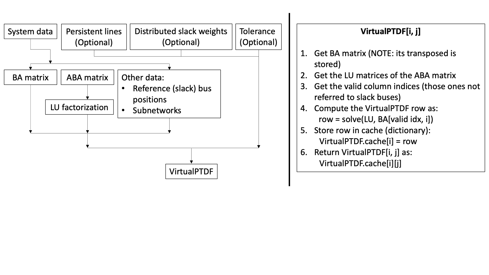

VirtualPTDF
Contrary to the traditional PTDF matrix, the VirtualPTDF is a structure containing rows of the original matrix, related to specific system arcs. The different rows of the PTDF matrix are cached in the VirtualPTDF structure as they are evaluated. This allows to keep just the portion of the original matrix which is of interest to the user, avoiding the unnecessary computation of the whole matrix.
Refer to the different arguments of the VirtualPTDF methods by looking at the "Public API Reference" page.
How the VirtualPTDF works
The VirtualPTDF is a structure containing everything needed to compute any row of the PTDF matrix and store it. To do so, the VirtualPTDF must store the BA matrix (coming from the BA_Matrix struct) and the inverse of the ABA matrix (coming from ABA_MAtrix struct). In particular, KLU is used to get the LU factorization matrices of the ABA matrix and these ones are stored, avoid the inversion.
Once the VirtualPTDF is initialized, each row of the PTDF matrix can be evaluated separately. The algorithmic procedure is the following:
- Define the
VirtualPTDFstructure - Call any element of the matrix to define and store the relative row as well as showing the selected element
Regarding point 2, if the row has been stored previously then the desired element is just loaded from the cache and shown.
The flowchart below shows how the VirtualPTDF is structured and how it works. Examples will be presented in the following sections.

Initialize VirtualPTDF and compute/access row/element
As for the PTDF matrix, at first the System data must be loaded. The "RTS-GMLC" systems is considered as example:
julia> using PowerNetworkMatricesjulia> using PowerSystemsjulia> using PowerSystemCaseBuilderjulia> import PowerSystems as PSYjulia> import PowerNetworkMatrices as PNMjulia> import PowerSystemCaseBuilder as PSBjulia> sys = PSB.build_system(PSB.PSISystems, "RTS_GMLC_DA_sys");[ Info: rating_b 893.0 MVA for C35 is outside the expected range (min = 327.0, max = 797.0) MVA for Line at a 230.0 kV Voltage level. [ Info: rating_c 893.0 MVA for C35 is outside the expected range (min = 327.0, max = 797.0) MVA for Line at a 230.0 kV Voltage level. [ Info: rating_b 510.0 MVA for A17 is outside the expected range (min = 50.0, max = 470.0) MVA for Transformer at a 230.0 kV Voltage level. [ Info: rating_c 600.0 MVA for A17 is outside the expected range (min = 50.0, max = 470.0) MVA for Transformer at a 230.0 kV Voltage level. [ Info: rating_b 510.0 MVA for C14 is outside the expected range (min = 50.0, max = 470.0) MVA for Transformer at a 230.0 kV Voltage level. [ Info: rating_c 600.0 MVA for C14 is outside the expected range (min = 50.0, max = 470.0) MVA for Transformer at a 230.0 kV Voltage level. [ Info: rating_b 510.0 MVA for A14 is outside the expected range (min = 50.0, max = 470.0) MVA for Transformer at a 230.0 kV Voltage level. [ Info: rating_c 600.0 MVA for A14 is outside the expected range (min = 50.0, max = 470.0) MVA for Transformer at a 230.0 kV Voltage level. [ Info: rating_b 510.0 MVA for A7 is outside the expected range (min = 50.0, max = 470.0) MVA for Transformer at a 230.0 kV Voltage level. [ Info: rating_c 600.0 MVA for A7 is outside the expected range (min = 50.0, max = 470.0) MVA for Transformer at a 230.0 kV Voltage level. [ Info: rating_b 510.0 MVA for C7 is outside the expected range (min = 50.0, max = 470.0) MVA for Transformer at a 230.0 kV Voltage level. [ Info: rating_c 600.0 MVA for C7 is outside the expected range (min = 50.0, max = 470.0) MVA for Transformer at a 230.0 kV Voltage level. [ Info: rating_b 510.0 MVA for A16 is outside the expected range (min = 50.0, max = 470.0) MVA for Transformer at a 230.0 kV Voltage level. [ Info: rating_c 600.0 MVA for A16 is outside the expected range (min = 50.0, max = 470.0) MVA for Transformer at a 230.0 kV Voltage level. [ Info: rating_b 510.0 MVA for B16 is outside the expected range (min = 50.0, max = 470.0) MVA for Transformer at a 230.0 kV Voltage level. [ Info: rating_c 600.0 MVA for B16 is outside the expected range (min = 50.0, max = 470.0) MVA for Transformer at a 230.0 kV Voltage level. [ Info: rating_b 510.0 MVA for B14 is outside the expected range (min = 50.0, max = 470.0) MVA for Transformer at a 230.0 kV Voltage level. [ Info: rating_c 600.0 MVA for B14 is outside the expected range (min = 50.0, max = 470.0) MVA for Transformer at a 230.0 kV Voltage level. [ Info: rating_b 510.0 MVA for B7 is outside the expected range (min = 50.0, max = 470.0) MVA for Transformer at a 230.0 kV Voltage level. [ Info: rating_c 600.0 MVA for B7 is outside the expected range (min = 50.0, max = 470.0) MVA for Transformer at a 230.0 kV Voltage level. [ Info: rating_b 510.0 MVA for C16 is outside the expected range (min = 50.0, max = 470.0) MVA for Transformer at a 230.0 kV Voltage level. [ Info: rating_c 600.0 MVA for C16 is outside the expected range (min = 50.0, max = 470.0) MVA for Transformer at a 230.0 kV Voltage level. [ Info: rating_b 510.0 MVA for C15 is outside the expected range (min = 50.0, max = 470.0) MVA for Transformer at a 230.0 kV Voltage level. [ Info: rating_c 600.0 MVA for C15 is outside the expected range (min = 50.0, max = 470.0) MVA for Transformer at a 230.0 kV Voltage level. [ Info: rating_b 510.0 MVA for B15 is outside the expected range (min = 50.0, max = 470.0) MVA for Transformer at a 230.0 kV Voltage level. [ Info: rating_c 600.0 MVA for B15 is outside the expected range (min = 50.0, max = 470.0) MVA for Transformer at a 230.0 kV Voltage level. [ Info: rating_b 510.0 MVA for C17 is outside the expected range (min = 50.0, max = 470.0) MVA for Transformer at a 230.0 kV Voltage level. [ Info: rating_c 600.0 MVA for C17 is outside the expected range (min = 50.0, max = 470.0) MVA for Transformer at a 230.0 kV Voltage level. [ Info: rating_b 510.0 MVA for B17 is outside the expected range (min = 50.0, max = 470.0) MVA for Transformer at a 230.0 kV Voltage level. [ Info: rating_c 600.0 MVA for B17 is outside the expected range (min = 50.0, max = 470.0) MVA for Transformer at a 230.0 kV Voltage level. [ Info: rating_b 510.0 MVA for A15 is outside the expected range (min = 50.0, max = 470.0) MVA for Transformer at a 230.0 kV Voltage level. [ Info: rating_c 600.0 MVA for A15 is outside the expected range (min = 50.0, max = 470.0) MVA for Transformer at a 230.0 kV Voltage level.
At this point the VirtualPTDF is initialized with the following simple command:
julia> v_ptdf = VirtualPTDF(sys);[ Info: Finding subnetworks via iterative union find
Now, an element of the matrix can be computed by calling the arc tuple and bus number:
julia> el_C31_105 = v_ptdf[(318, 321), 105]-0.01023992945626146
Alternatively, the value can be indexed by row and column numbers directly. In this case the row and column numbers are mapped by the dictonaries contained in the lookup field.
julia> row_number = v_ptdf.lookup[1][(318, 321)]99julia> col_number = v_ptdf.lookup[2][105]5julia> el_C31_105_bis = v_ptdf[row_number, col_number]-0.01023992945626146
NOTE: this example was made for the sake of completeness and considering the actual arc tuple and bus number is recommended.
As previously mentioned, in order to evaluate a single element of the VirtualPTDF, the entire row related to the selected arc must be considered. For this reason it is cached in the VirtualPTDF structure for later calls. This is evident by looking at the following example:
julia> sys_2k = PSB.build_system(PSB.PSYTestSystems, "tamu_ACTIVSg2000_sys");[ Info: rating 300.0 MVA for HOUSTON 4 2 -7188-HOUSTON 39 0-7255-i_7 is outside the expected range (min = 92.0, max = 255.0) MVA for Line at a 115.0 kV Voltage level. [ Info: rating 300.0 MVA for HOUSTON 78 0-7147-HOUSTON 72 0-7028-i_2 is outside the expected range (min = 92.0, max = 255.0) MVA for Line at a 115.0 kV Voltage level. [ Info: rating 300.0 MVA for HOUSTON 5 2 -7161-HOUSTON 69 0-7292-i_4 is outside the expected range (min = 92.0, max = 255.0) MVA for Line at a 115.0 kV Voltage level. [ Info: rating 300.0 MVA for SEBASTIAN ~1-4194-HARLINGEN ~1-4067-i_2 is outside the expected range (min = 92.0, max = 255.0) MVA for Line at a 115.0 kV Voltage level. [ Info: rating 820.0 MVA for ROSCOE 5 0 -3046-HERMLEIGH 0 -3078-i_1 is outside the expected range (min = 327.0, max = 797.0) MVA for Line at a 230.0 kV Voltage level. [ Info: rating 300.0 MVA for BIG SPRING~1-1020-STERLING C~2-3059-i_1 is outside the expected range (min = 92.0, max = 255.0) MVA for Line at a 115.0 kV Voltage level. [ Info: rating 500.0 MVA for BALCH SPRI~1-5374-MESQUITE 2 0-5158-i_2 is outside the expected range (min = 176.0, max = 410.0) MVA for Line at a 161.0 kV Voltage level. [ Info: rating 500.0 MVA for BALCH SPRI~1-5374-MESQUITE 2 0-5158-i_1 is outside the expected range (min = 176.0, max = 410.0) MVA for Line at a 161.0 kV Voltage level. [ Info: rating 500.0 MVA for DALLAS 5 0 -5250-DALLAS 3 1 -5385-i_1 is outside the expected range (min = 176.0, max = 410.0) MVA for Line at a 161.0 kV Voltage level. [ Info: rating 800.0 MVA for COLLEGE ST~1-8094-BRENHAM 1 -6063-i_1 is outside the expected range (min = 327.0, max = 797.0) MVA for Line at a 230.0 kV Voltage level. [ Info: rating 4352.0 MVA for BRIDGEPORT 0-5361-KELLER 2 0 -5015-i_1 is outside the expected range (min = 1732.0, max = 3464.0) MVA for Line at a 500.0 kV Voltage level. [ Info: rating 300.0 MVA for HOUSTON 4 2 -7188-HOUSTON 39 0-7255-i_1 is outside the expected range (min = 92.0, max = 255.0) MVA for Line at a 115.0 kV Voltage level. [ Info: rating 1400.0 MVA for WINCHESTER 1-6102-BASTROP 1 -6004-i_1 is outside the expected range (min = 327.0, max = 797.0) MVA for Line at a 230.0 kV Voltage level. [ Info: rating 300.0 MVA for SEBASTIAN ~1-4194-HARLINGEN ~1-4067-i_3 is outside the expected range (min = 92.0, max = 255.0) MVA for Line at a 115.0 kV Voltage level. [ Info: rating 500.0 MVA for DALLAS 5 0 -5250-DALLAS 3 1 -5385-i_2 is outside the expected range (min = 176.0, max = 410.0) MVA for Line at a 161.0 kV Voltage level. [ Info: rating 850.0 MVA for WINCHESTER 1-6102-LA GRANGE 1 -6076-i_1 is outside the expected range (min = 327.0, max = 797.0) MVA for Line at a 230.0 kV Voltage level. [ Info: rating 400.0 MVA for SAN ANTON~57-6016-SAN ANTON~48-6356-i_1 is outside the expected range (min = 92.0, max = 255.0) MVA for Line at a 115.0 kV Voltage level. [ Info: rating 300.0 MVA for HOUSTON 4 2 -7188-HOUSTON 39 0-7255-i_3 is outside the expected range (min = 92.0, max = 255.0) MVA for Line at a 115.0 kV Voltage level. [ Info: rating 300.0 MVA for ODESSA 5 0 -1037-ODESSA 1 0 -1071-i_1 is outside the expected range (min = 92.0, max = 255.0) MVA for Line at a 115.0 kV Voltage level. [ Info: rating 4352.0 MVA for GRANBURY 1 0-5317-GLEN ROSE ~1-5260-i_1 is outside the expected range (min = 1732.0, max = 3464.0) MVA for Line at a 500.0 kV Voltage level. [ Info: rating 300.0 MVA for HOUSTON 4 2 -7188-HOUSTON 39 0-7255-i_8 is outside the expected range (min = 92.0, max = 255.0) MVA for Line at a 115.0 kV Voltage level. [ Info: rating 4352.0 MVA for SAN ANTONI~1-6141-SAN ANTON~51-6197-i_1 is outside the expected range (min = 1732.0, max = 3464.0) MVA for Line at a 500.0 kV Voltage level. [ Info: rating 300.0 MVA for BROWNSVILL~5-4126-OLMITO 0 -4102-i_2 is outside the expected range (min = 92.0, max = 255.0) MVA for Line at a 115.0 kV Voltage level. [ Info: rating 300.0 MVA for BROWNSVILL~5-4126-OLMITO 0 -4102-i_1 is outside the expected range (min = 92.0, max = 255.0) MVA for Line at a 115.0 kV Voltage level. [ Info: rating 300.0 MVA for HOUSTON 4 2 -7188-HOUSTON 39 0-7255-i_4 is outside the expected range (min = 92.0, max = 255.0) MVA for Line at a 115.0 kV Voltage level. [ Info: rating 300.0 MVA for HOUSTON 5 2 -7161-HOUSTON 69 0-7292-i_3 is outside the expected range (min = 92.0, max = 255.0) MVA for Line at a 115.0 kV Voltage level. [ Info: rating 820.0 MVA for SILVER 0 -3041-ROSCOE 5 0 -3046-i_1 is outside the expected range (min = 327.0, max = 797.0) MVA for Line at a 230.0 kV Voltage level. [ Info: rating 820.0 MVA for MISSION 1 0 -4073-SAN JUAN 0 -4041-i_2 is outside the expected range (min = 327.0, max = 797.0) MVA for Line at a 230.0 kV Voltage level. [ Info: rating 300.0 MVA for ELGIN 0 -6027-MANOR 0 -6181-i_1 is outside the expected range (min = 92.0, max = 255.0) MVA for Line at a 115.0 kV Voltage level. [ Info: rating 300.0 MVA for HARLINGEN ~2-4111-HARLINGEN ~1-4067-i_1 is outside the expected range (min = 92.0, max = 255.0) MVA for Line at a 115.0 kV Voltage level. [ Info: rating 300.0 MVA for MISSION 3 0 -4079-MISSION 4 1 -4040-i_2 is outside the expected range (min = 92.0, max = 255.0) MVA for Line at a 115.0 kV Voltage level. [ Info: rating 300.0 MVA for MISSION 3 0 -4079-MISSION 4 1 -4040-i_1 is outside the expected range (min = 92.0, max = 255.0) MVA for Line at a 115.0 kV Voltage level. [ Info: rating 150.0 MVA for DUBLIN 2 0 -5286-HICO 0 -5112-i_1 is outside the expected range (min = 176.0, max = 410.0) MVA for Line at a 161.0 kV Voltage level. [ Info: rating 820.0 MVA for MISSION 1 0 -4073-SAN JUAN 0 -4041-i_1 is outside the expected range (min = 327.0, max = 797.0) MVA for Line at a 230.0 kV Voltage level. [ Info: rating 340.0 MVA for FLUVANNA 1 0-3109-FLUVANNA 2 1-3097-i_1 is outside the expected range (min = 92.0, max = 255.0) MVA for Line at a 115.0 kV Voltage level. [ Info: rating 300.0 MVA for HOUSTON 4 2 -7188-HOUSTON 39 0-7255-i_5 is outside the expected range (min = 92.0, max = 255.0) MVA for Line at a 115.0 kV Voltage level. [ Info: rating 300.0 MVA for AUSTIN 10 0 -6024-AUSTIN 17 0 -6219-i_1 is outside the expected range (min = 92.0, max = 255.0) MVA for Line at a 115.0 kV Voltage level. [ Info: rating 300.0 MVA for HOUSTON 78 0-7147-HOUSTON 72 0-7028-i_1 is outside the expected range (min = 92.0, max = 255.0) MVA for Line at a 115.0 kV Voltage level. [ Info: rating 1000.0 MVA for STERLING C~1-3058-WINGATE 0 -3053-i_1 is outside the expected range (min = 327.0, max = 797.0) MVA for Line at a 230.0 kV Voltage level. [ Info: rating 260.0 MVA for CHRISTINE 1 -4025-JOURDANTON 0-4117-i_1 is outside the expected range (min = 92.0, max = 255.0) MVA for Line at a 115.0 kV Voltage level. [ Info: rating 500.0 MVA for DALLAS 5 0 -5250-DALLAS 3 1 -5385-i_4 is outside the expected range (min = 176.0, max = 410.0) MVA for Line at a 161.0 kV Voltage level. [ Info: rating 820.0 MVA for BROWNSVILL~1-4192-MISSION 1 0 -4073-i_1 is outside the expected range (min = 327.0, max = 797.0) MVA for Line at a 230.0 kV Voltage level. [ Info: rating 300.0 MVA for SEBASTIAN ~1-4194-HARLINGEN ~1-4067-i_1 is outside the expected range (min = 92.0, max = 255.0) MVA for Line at a 115.0 kV Voltage level. [ Info: rating 800.0 MVA for CUSHING 1 0 -8097-JACKSONVIL~2-8113-i_1 is outside the expected range (min = 327.0, max = 797.0) MVA for Line at a 230.0 kV Voltage level. [ Info: rating 300.0 MVA for HOUSTON 4 2 -7188-HOUSTON 39 0-7255-i_6 is outside the expected range (min = 92.0, max = 255.0) MVA for Line at a 115.0 kV Voltage level. [ Info: rating 4352.0 MVA for THOMPSONS 0 -7346-SUGAR LAND~2-7125-i_1 is outside the expected range (min = 1732.0, max = 3464.0) MVA for Line at a 500.0 kV Voltage level. [ Info: rating 300.0 MVA for HOUSTON 5 2 -7161-HOUSTON 69 0-7292-i_2 is outside the expected range (min = 92.0, max = 255.0) MVA for Line at a 115.0 kV Voltage level. [ Info: rating 820.0 MVA for SAN PERLIT~1-4183-CORPUS CH~18-4080-i_1 is outside the expected range (min = 327.0, max = 797.0) MVA for Line at a 230.0 kV Voltage level. [ Info: rating 500.0 MVA for DALLAS 5 0 -5250-DALLAS 3 1 -5385-i_3 is outside the expected range (min = 176.0, max = 410.0) MVA for Line at a 161.0 kV Voltage level. [ Info: rating 300.0 MVA for MISSION 3 0 -4079-MISSION 4 1 -4040-i_3 is outside the expected range (min = 92.0, max = 255.0) MVA for Line at a 115.0 kV Voltage level. ┌ Warning: Transformer CHANNELVIE~7-7368-CHANNELVIE~2-7367-i_2 per-unit reactance 0.03726 is lower than the typical range (min = 0.05, max = 0.2). Check if the reactance source data is correct. └ @ PowerSystems ~/.julia/packages/PowerSystems/NaNLD/src/utils/IO/branchdata_checks.jl:321 ┌ Warning: Transformer CHANNELVI~13-7374-CHANNELVIE~1-7366-i_1 per-unit reactance 0.0255 is lower than the typical range (min = 0.05, max = 0.2). Check if the reactance source data is correct. └ @ PowerSystems ~/.julia/packages/PowerSystems/NaNLD/src/utils/IO/branchdata_checks.jl:321 ┌ Warning: Transformer CORPUS CHR~2-4159-CORPUS CHR~1-4158-i_2 per-unit reactance 0.02511 is lower than the typical range (min = 0.05, max = 0.2). Check if the reactance source data is correct. └ @ PowerSystems ~/.julia/packages/PowerSystems/NaNLD/src/utils/IO/branchdata_checks.jl:321 [ Info: rating 620.0 MVA for CORPUS CHR~2-4159-CORPUS CHR~1-4158-i_2 is outside the expected range (min = 50.0, max = 470.0) MVA for Transformer at a 230.0 kV Voltage level. ┌ Warning: Transformer TYLER 4 1 -8019-TYLER 4 0 -8018-i_1 per-unit reactance 0.03658 is lower than the typical range (min = 0.05, max = 0.2). Check if the reactance source data is correct. └ @ PowerSystems ~/.julia/packages/PowerSystems/NaNLD/src/utils/IO/branchdata_checks.jl:321 ┌ Warning: Transformer ELMENDORF 4 -6243-ELMENDORF 0 -6239-i_1 per-unit reactance 0.01934 is lower than the typical range (min = 0.05, max = 0.2). Check if the reactance source data is correct. └ @ PowerSystems ~/.julia/packages/PowerSystems/NaNLD/src/utils/IO/branchdata_checks.jl:321 ┌ Warning: Transformer GARLAND 1 1 -5351-GARLAND 1 0 -5350-i_1 per-unit reactance 0.00906 is lower than the typical range (min = 0.05, max = 0.2). Check if the reactance source data is correct. └ @ PowerSystems ~/.julia/packages/PowerSystems/NaNLD/src/utils/IO/branchdata_checks.jl:321 ┌ Warning: Transformer PEARSALL 1 -4132-PEARSALL 0 -4131-i_1 per-unit reactance 0.01679 is lower than the typical range (min = 0.05, max = 0.2). Check if the reactance source data is correct. └ @ PowerSystems ~/.julia/packages/PowerSystems/NaNLD/src/utils/IO/branchdata_checks.jl:321 ┌ Warning: Transformer LA GRANGE 4 -6079-LA GRANGE 0 -6075-i_1 per-unit reactance 0.00542 is lower than the typical range (min = 0.05, max = 0.2). Check if the reactance source data is correct. └ @ PowerSystems ~/.julia/packages/PowerSystems/NaNLD/src/utils/IO/branchdata_checks.jl:321 ┌ Warning: Transformer LAREDO 1 1 -4114-LAREDO 1 0 -4113-i_1 per-unit reactance 0.01874 is lower than the typical range (min = 0.05, max = 0.2). Check if the reactance source data is correct. └ @ PowerSystems ~/.julia/packages/PowerSystems/NaNLD/src/utils/IO/branchdata_checks.jl:321 ┌ Warning: Transformer TEMPLE 1 4 -5283-TEMPLE 1 0 -5279-i_1 per-unit reactance 0.01279 is lower than the typical range (min = 0.05, max = 0.2). Check if the reactance source data is correct. └ @ PowerSystems ~/.julia/packages/PowerSystems/NaNLD/src/utils/IO/branchdata_checks.jl:321 ┌ Warning: Transformer BRIDGEPORT 3-5364-BRIDGEPORT 0-5361-i_1 per-unit reactance 0.00948 is lower than the typical range (min = 0.05, max = 0.2). Check if the reactance source data is correct. └ @ PowerSystems ~/.julia/packages/PowerSystems/NaNLD/src/utils/IO/branchdata_checks.jl:321 ┌ Warning: Transformer NURSERY 1 -7019-NURSERY 0 -7018-i_1 per-unit reactance 0.04341 is lower than the typical range (min = 0.05, max = 0.2). Check if the reactance source data is correct. └ @ PowerSystems ~/.julia/packages/PowerSystems/NaNLD/src/utils/IO/branchdata_checks.jl:321 ┌ Warning: Transformer SUGAR LAND~4-7127-SUGAR LAND~3-7126-i_1 per-unit reactance 0.01178 is lower than the typical range (min = 0.05, max = 0.2). Check if the reactance source data is correct. └ @ PowerSystems ~/.julia/packages/PowerSystems/NaNLD/src/utils/IO/branchdata_checks.jl:321 [ Info: rating 512.3 MVA for SUGAR LAND~4-7127-SUGAR LAND~3-7126-i_1 is outside the expected range (min = 50.0, max = 470.0) MVA for Transformer at a 230.0 kV Voltage level. ┌ Warning: Transformer KATY 1 1 -7048-KATY 1 0 -7047-i_1 per-unit reactance 0.00819 is lower than the typical range (min = 0.05, max = 0.2). Check if the reactance source data is correct. └ @ PowerSystems ~/.julia/packages/PowerSystems/NaNLD/src/utils/IO/branchdata_checks.jl:321 ┌ Warning: Transformer SANTA ROSA~5-4093-SANTA ROSA~1-4089-i_1 per-unit reactance 0.24296 is higher than the typical range (min = 0.05, max = 0.2). Check if the reactance source data is correct. └ @ PowerSystems ~/.julia/packages/PowerSystems/NaNLD/src/utils/IO/branchdata_checks.jl:326 ┌ Warning: Transformer LEANDER 1 1 -6022-LEANDER 1 0 -6021-i_1 per-unit reactance 0.01733 is lower than the typical range (min = 0.05, max = 0.2). Check if the reactance source data is correct. └ @ PowerSystems ~/.julia/packages/PowerSystems/NaNLD/src/utils/IO/branchdata_checks.jl:321 ┌ Warning: Transformer BAYTOWN 3 2 -7284-BAYTOWN 3 0 -7282-i_1 per-unit reactance 0.26257 is higher than the typical range (min = 0.05, max = 0.2). Check if the reactance source data is correct. └ @ PowerSystems ~/.julia/packages/PowerSystems/NaNLD/src/utils/IO/branchdata_checks.jl:326 ┌ Warning: Transformer SAN MARCOS 2-6230-SAN MARCOS 1-6229-i_2 per-unit reactance 0.03602 is lower than the typical range (min = 0.05, max = 0.2). Check if the reactance source data is correct. └ @ PowerSystems ~/.julia/packages/PowerSystems/NaNLD/src/utils/IO/branchdata_checks.jl:321 [ Info: rating 250.0 MVA for ROSCOE 1 1 -3122-ROSCOE 1 0 -3121-i_1 is outside the expected range (min = 17.0, max = 140.0) MVA for Transformer at a 115.0 kV Voltage level. ┌ Warning: Transformer FANNIN 2 -4030-FANNIN 0 -4028-i_3 per-unit reactance 0.0395 is lower than the typical range (min = 0.05, max = 0.2). Check if the reactance source data is correct. └ @ PowerSystems ~/.julia/packages/PowerSystems/NaNLD/src/utils/IO/branchdata_checks.jl:321 ┌ Warning: Transformer FRANKLIN 3 -8085-FRANKLIN 2 -8084-i_1 per-unit reactance 0.02498 is lower than the typical range (min = 0.05, max = 0.2). Check if the reactance source data is correct. └ @ PowerSystems ~/.julia/packages/PowerSystems/NaNLD/src/utils/IO/branchdata_checks.jl:321 ┌ Warning: Transformer SAN ANTONI~6-6146-SAN ANTONI~1-6141-i_1 per-unit reactance 0.01722 is lower than the typical range (min = 0.05, max = 0.2). Check if the reactance source data is correct. └ @ PowerSystems ~/.julia/packages/PowerSystems/NaNLD/src/utils/IO/branchdata_checks.jl:321 ┌ Warning: Transformer FAIRFIELD ~9-8051-FAIRFIELD ~1-8043-i_1 per-unit reactance 0.00831 is lower than the typical range (min = 0.05, max = 0.2). Check if the reactance source data is correct. └ @ PowerSystems ~/.julia/packages/PowerSystems/NaNLD/src/utils/IO/branchdata_checks.jl:321 ┌ Warning: Transformer SUGAR LAND~4-7127-SUGAR LAND~3-7126-i_4 per-unit reactance 0.01178 is lower than the typical range (min = 0.05, max = 0.2). Check if the reactance source data is correct. └ @ PowerSystems ~/.julia/packages/PowerSystems/NaNLD/src/utils/IO/branchdata_checks.jl:321 [ Info: rating 512.3 MVA for SUGAR LAND~4-7127-SUGAR LAND~3-7126-i_4 is outside the expected range (min = 50.0, max = 470.0) MVA for Transformer at a 230.0 kV Voltage level. ┌ Warning: Transformer SUGAR LAND~7-7039-SUGAR LAND~6-7038-i_1 per-unit reactance 0.02618 is lower than the typical range (min = 0.05, max = 0.2). Check if the reactance source data is correct. └ @ PowerSystems ~/.julia/packages/PowerSystems/NaNLD/src/utils/IO/branchdata_checks.jl:321 ┌ Warning: Transformer THOMPSONS 15-7361-THOMPSONS 0 -7346-i_1 per-unit reactance 0.02464 is lower than the typical range (min = 0.05, max = 0.2). Check if the reactance source data is correct. └ @ PowerSystems ~/.julia/packages/PowerSystems/NaNLD/src/utils/IO/branchdata_checks.jl:321 ┌ Warning: Transformer SAN MARCOS 2-6230-SAN MARCOS 1-6229-i_1 per-unit reactance 0.03602 is lower than the typical range (min = 0.05, max = 0.2). Check if the reactance source data is correct. └ @ PowerSystems ~/.julia/packages/PowerSystems/NaNLD/src/utils/IO/branchdata_checks.jl:321 ┌ Warning: Transformer MARBLE FA~10-6216-MARBLE FAL~4-6210-i_1 per-unit reactance 0.01596 is lower than the typical range (min = 0.05, max = 0.2). Check if the reactance source data is correct. └ @ PowerSystems ~/.julia/packages/PowerSystems/NaNLD/src/utils/IO/branchdata_checks.jl:321 ┌ Warning: Transformer LUFKIN 3 1 -8005-LUFKIN 3 0 -8004-i_1 per-unit reactance 0.01244 is lower than the typical range (min = 0.05, max = 0.2). Check if the reactance source data is correct. └ @ PowerSystems ~/.julia/packages/PowerSystems/NaNLD/src/utils/IO/branchdata_checks.jl:321 ┌ Warning: Transformer SEGUIN 2 1 -6280-SEGUIN 2 0 -6279-i_1 per-unit reactance 0.03718 is lower than the typical range (min = 0.05, max = 0.2). Check if the reactance source data is correct. └ @ PowerSystems ~/.julia/packages/PowerSystems/NaNLD/src/utils/IO/branchdata_checks.jl:321 ┌ Warning: Transformer MT. ENTERP~2-8075-MT. ENTERP~1-8074-i_2 per-unit reactance 0.02981 is lower than the typical range (min = 0.05, max = 0.2). Check if the reactance source data is correct. └ @ PowerSystems ~/.julia/packages/PowerSystems/NaNLD/src/utils/IO/branchdata_checks.jl:321 ┌ Warning: Transformer ELMENDORF 9 -6248-ELMENDORF 0 -6239-i_1 per-unit reactance 0.01749 is lower than the typical range (min = 0.05, max = 0.2). Check if the reactance source data is correct. └ @ PowerSystems ~/.julia/packages/PowerSystems/NaNLD/src/utils/IO/branchdata_checks.jl:321 ┌ Warning: Transformer SAN ANTON~53-6199-SAN ANTON~52-6198-i_2 per-unit reactance 0.01693 is lower than the typical range (min = 0.05, max = 0.2). Check if the reactance source data is correct. └ @ PowerSystems ~/.julia/packages/PowerSystems/NaNLD/src/utils/IO/branchdata_checks.jl:321 ┌ Warning: Transformer JAYTON 1 -2074-JAYTON 0 -2073-i_1 per-unit reactance 0.04467 is lower than the typical range (min = 0.05, max = 0.2). Check if the reactance source data is correct. └ @ PowerSystems ~/.julia/packages/PowerSystems/NaNLD/src/utils/IO/branchdata_checks.jl:321 ┌ Warning: Transformer BURLESON 1 -5480-BURLESON 0 -5479-i_1 per-unit reactance 0.01505 is lower than the typical range (min = 0.05, max = 0.2). Check if the reactance source data is correct. └ @ PowerSystems ~/.julia/packages/PowerSystems/NaNLD/src/utils/IO/branchdata_checks.jl:321 ┌ Warning: Transformer GALVESTON ~2-7074-GALVESTON ~1-7073-i_1 per-unit reactance 0.03776 is lower than the typical range (min = 0.05, max = 0.2). Check if the reactance source data is correct. └ @ PowerSystems ~/.julia/packages/PowerSystems/NaNLD/src/utils/IO/branchdata_checks.jl:321 ┌ Warning: Transformer MOUNT PLEA~4-8129-MOUNT PLEA~1-8126-i_1 per-unit reactance 0.00487 is lower than the typical range (min = 0.05, max = 0.2). Check if the reactance source data is correct. └ @ PowerSystems ~/.julia/packages/PowerSystems/NaNLD/src/utils/IO/branchdata_checks.jl:321 ┌ Warning: Transformer ELMENDORF 10-6249-ELMENDORF 0 -6239-i_1 per-unit reactance 0.02531 is lower than the typical range (min = 0.05, max = 0.2). Check if the reactance source data is correct. └ @ PowerSystems ~/.julia/packages/PowerSystems/NaNLD/src/utils/IO/branchdata_checks.jl:321 ┌ Warning: Transformer SPRING 7 1 -7176-SPRING 7 0 -7175-i_1 per-unit reactance 0.01242 is lower than the typical range (min = 0.05, max = 0.2). Check if the reactance source data is correct. └ @ PowerSystems ~/.julia/packages/PowerSystems/NaNLD/src/utils/IO/branchdata_checks.jl:321 ┌ Warning: Transformer TRINIDAD 1 1-8148-TRINIDAD 1 0-8147-i_1 per-unit reactance 0.03635 is lower than the typical range (min = 0.05, max = 0.2). Check if the reactance source data is correct. └ @ PowerSystems ~/.julia/packages/PowerSystems/NaNLD/src/utils/IO/branchdata_checks.jl:321 ┌ Warning: Transformer STERLING C~5-3062-STERLING C~1-3058-i_1 per-unit reactance 0.04112999999999999 is lower than the typical range (min = 0.05, max = 0.2). Check if the reactance source data is correct. └ @ PowerSystems ~/.julia/packages/PowerSystems/NaNLD/src/utils/IO/branchdata_checks.jl:321 ┌ Warning: Transformer SEGUIN 1 1 -6162-SEGUIN 1 0 -6161-i_1 per-unit reactance 0.01685 is lower than the typical range (min = 0.05, max = 0.2). Check if the reactance source data is correct. └ @ PowerSystems ~/.julia/packages/PowerSystems/NaNLD/src/utils/IO/branchdata_checks.jl:321 ┌ Warning: Transformer HOUSTON 4 8 -7194-HOUSTON 4 0 -7186-i_1 per-unit reactance 0.01508 is lower than the typical range (min = 0.05, max = 0.2). Check if the reactance source data is correct. └ @ PowerSystems ~/.julia/packages/PowerSystems/NaNLD/src/utils/IO/branchdata_checks.jl:321 ┌ Warning: Transformer OLNEY 1 2 -5238-OLNEY 1 0 -5236-i_1 per-unit reactance 0.00976 is lower than the typical range (min = 0.05, max = 0.2). Check if the reactance source data is correct. └ @ PowerSystems ~/.julia/packages/PowerSystems/NaNLD/src/utils/IO/branchdata_checks.jl:321 [ Info: rating 260.0 MVA for BIG SPRIN~12-1063-BIG SPRIN~10-1061-i_1 is outside the expected range (min = 17.0, max = 140.0) MVA for Transformer at a 115.0 kV Voltage level. ┌ Warning: Transformer MARION 1 7 -6073-MARION 1 0 -6066-i_1 per-unit reactance 0.01616 is lower than the typical range (min = 0.05, max = 0.2). Check if the reactance source data is correct. └ @ PowerSystems ~/.julia/packages/PowerSystems/NaNLD/src/utils/IO/branchdata_checks.jl:321 ┌ Warning: Transformer PASADENA 2 7-7009-PASADENA 2 0-7002-i_1 per-unit reactance 0.02499 is lower than the typical range (min = 0.05, max = 0.2). Check if the reactance source data is correct. └ @ PowerSystems ~/.julia/packages/PowerSystems/NaNLD/src/utils/IO/branchdata_checks.jl:321 ┌ Warning: Transformer DEER PARK 7 -7111-DEER PARK 0 -7104-i_1 per-unit reactance 0.01942 is lower than the typical range (min = 0.05, max = 0.2). Check if the reactance source data is correct. └ @ PowerSystems ~/.julia/packages/PowerSystems/NaNLD/src/utils/IO/branchdata_checks.jl:321 ┌ Warning: Transformer BASTROP 5 -6008-BASTROP 0 -6003-i_1 per-unit reactance 0.01445 is lower than the typical range (min = 0.05, max = 0.2). Check if the reactance source data is correct. └ @ PowerSystems ~/.julia/packages/PowerSystems/NaNLD/src/utils/IO/branchdata_checks.jl:321 ┌ Warning: Transformer SEGUIN 1 2 -6163-SEGUIN 1 1 -6162-i_1 per-unit reactance 0.04275 is lower than the typical range (min = 0.05, max = 0.2). Check if the reactance source data is correct. └ @ PowerSystems ~/.julia/packages/PowerSystems/NaNLD/src/utils/IO/branchdata_checks.jl:321 ┌ Warning: Transformer SAN ANTON~28-6052-SAN ANTON~21-6045-i_1 per-unit reactance 0.03404 is lower than the typical range (min = 0.05, max = 0.2). Check if the reactance source data is correct. └ @ PowerSystems ~/.julia/packages/PowerSystems/NaNLD/src/utils/IO/branchdata_checks.jl:321 ┌ Warning: Transformer HOLLAND 2 -5460-HOLLAND 1 -5459-i_1 per-unit reactance 0.34714 is higher than the typical range (min = 0.05, max = 0.2). Check if the reactance source data is correct. └ @ PowerSystems ~/.julia/packages/PowerSystems/NaNLD/src/utils/IO/branchdata_checks.jl:326 ┌ Warning: Transformer BASTROP 3 -6006-BASTROP 0 -6003-i_1 per-unit reactance 0.01241 is lower than the typical range (min = 0.05, max = 0.2). Check if the reactance source data is correct. └ @ PowerSystems ~/.julia/packages/PowerSystems/NaNLD/src/utils/IO/branchdata_checks.jl:321 ┌ Warning: Transformer MISSOURI C~3-7185-MISSOURI C~2-7184-i_2 per-unit reactance 0.0321 is lower than the typical range (min = 0.05, max = 0.2). Check if the reactance source data is correct. └ @ PowerSystems ~/.julia/packages/PowerSystems/NaNLD/src/utils/IO/branchdata_checks.jl:321 ┌ Warning: Transformer BROWNWOOD 1 -5121-BROWNWOOD 0 -5120-i_1 per-unit reactance 0.04599 is lower than the typical range (min = 0.05, max = 0.2). Check if the reactance source data is correct. └ @ PowerSystems ~/.julia/packages/PowerSystems/NaNLD/src/utils/IO/branchdata_checks.jl:321 ┌ Warning: Transformer SANTA ROSA~2-4090-SANTA ROSA~1-4089-i_1 per-unit reactance 0.58764 is higher than the typical range (min = 0.05, max = 0.2). Check if the reactance source data is correct. └ @ PowerSystems ~/.julia/packages/PowerSystems/NaNLD/src/utils/IO/branchdata_checks.jl:326 ┌ Warning: Transformer MARBLE FAL~3-6083-MARBLE FAL~1-6081-i_1 per-unit reactance 0.2531 is higher than the typical range (min = 0.05, max = 0.2). Check if the reactance source data is correct. └ @ PowerSystems ~/.julia/packages/PowerSystems/NaNLD/src/utils/IO/branchdata_checks.jl:326 ┌ Warning: Transformer PORT LAVAC~4-7032-PORT LAVAC~1-7029-i_1 per-unit reactance 0.23196 is higher than the typical range (min = 0.05, max = 0.2). Check if the reactance source data is correct. └ @ PowerSystems ~/.julia/packages/PowerSystems/NaNLD/src/utils/IO/branchdata_checks.jl:326 ┌ Warning: Transformer CUERO 1 9 -6274-CUERO 1 0 -6265-i_1 per-unit reactance 0.4175 is higher than the typical range (min = 0.05, max = 0.2). Check if the reactance source data is correct. └ @ PowerSystems ~/.julia/packages/PowerSystems/NaNLD/src/utils/IO/branchdata_checks.jl:326 ┌ Warning: Transformer GOLDTHWAIT~4-5242-GOLDTHWAIT~3-5241-i_1 per-unit reactance 0.47482 is higher than the typical range (min = 0.05, max = 0.2). Check if the reactance source data is correct. └ @ PowerSystems ~/.julia/packages/PowerSystems/NaNLD/src/utils/IO/branchdata_checks.jl:326 ┌ Warning: Transformer CUERO 1 5 -6270-CUERO 1 0 -6265-i_1 per-unit reactance 0.32424 is higher than the typical range (min = 0.05, max = 0.2). Check if the reactance source data is correct. └ @ PowerSystems ~/.julia/packages/PowerSystems/NaNLD/src/utils/IO/branchdata_checks.jl:326 [ Info: rating 500.0 MVA for CORPUS CH~23-4085-CORPUS CH~18-4080-i_1 is outside the expected range (min = 50.0, max = 470.0) MVA for Transformer at a 230.0 kV Voltage level. ┌ Warning: Transformer HOUSTON 2 1 -7146-HOUSTON 2 0 -7145-i_1 per-unit reactance 0.21285 is higher than the typical range (min = 0.05, max = 0.2). Check if the reactance source data is correct. └ @ PowerSystems ~/.julia/packages/PowerSystems/NaNLD/src/utils/IO/branchdata_checks.jl:326 [ Info: rating 220.0 MVA for IRAAN 1 1 -1070-IRAAN 1 0 -1069-i_1 is outside the expected range (min = 17.0, max = 140.0) MVA for Transformer at a 115.0 kV Voltage level. [ Info: rating 1500.0 MVA for ROSCOE 5 2 -3048-ROSCOE 5 0 -3046-i_2 is outside the expected range (min = 150.0, max = 1383.0) MVA for Transformer at a 500.0 kV Voltage level. ┌ Warning: Transformer LEWISVILLE~2-5342-LEWISVILLE~1-5341-i_1 per-unit reactance 0.25106 is higher than the typical range (min = 0.05, max = 0.2). Check if the reactance source data is correct. └ @ PowerSystems ~/.julia/packages/PowerSystems/NaNLD/src/utils/IO/branchdata_checks.jl:326 [ Info: rating 250.0 MVA for FALCON HEI~4-4047-FALCON HEI~1-4044-i_1 is outside the expected range (min = 17.0, max = 140.0) MVA for Transformer at a 115.0 kV Voltage level. ┌ Warning: Transformer SANTA ROSA~8-4096-SANTA ROSA~1-4089-i_1 per-unit reactance 0.29442 is higher than the typical range (min = 0.05, max = 0.2). Check if the reactance source data is correct. └ @ PowerSystems ~/.julia/packages/PowerSystems/NaNLD/src/utils/IO/branchdata_checks.jl:326 [ Info: rating 1450.0 MVA for GLEN ROSE ~3-5262-GLEN ROSE ~1-5260-i_1 is outside the expected range (min = 150.0, max = 1383.0) MVA for Transformer at a 500.0 kV Voltage level. ┌ Warning: Transformer CUERO 1 4 -6269-CUERO 1 0 -6265-i_1 per-unit reactance 0.59011 is higher than the typical range (min = 0.05, max = 0.2). Check if the reactance source data is correct. └ @ PowerSystems ~/.julia/packages/PowerSystems/NaNLD/src/utils/IO/branchdata_checks.jl:326 [ Info: rating 600.0 MVA for HOUSTON 4 2 -7188-HOUSTON 4 1 -7187-i_1 is outside the expected range (min = 50.0, max = 470.0) MVA for Transformer at a 230.0 kV Voltage level. [ Info: rating 200.0 MVA for FORT STOCK~2-1039-FORT STOCK~1-1038-i_1 is outside the expected range (min = 17.0, max = 140.0) MVA for Transformer at a 115.0 kV Voltage level. [ Info: rating 240.0 MVA for ODESSA 1 3 -1074-ODESSA 1 0 -1071-i_1 is outside the expected range (min = 17.0, max = 140.0) MVA for Transformer at a 115.0 kV Voltage level. ┌ Warning: rating 390.0 MVA for MONAHANS 1 2-1049-MONAHANS 1 0-1047-i_1 is 2x larger than the max expected rating 140.0 MVA for Transformer at a 115.0 kV Voltage level. └ @ PowerSystems ~/.julia/packages/PowerSystems/NaNLD/src/utils/IO/branchdata_checks.jl:305 [ Info: rating 145.0 MVA for FORSAN 1 -1042-FORSAN 0 -1041-i_1 is outside the expected range (min = 17.0, max = 140.0) MVA for Transformer at a 115.0 kV Voltage level. [ Info: rating 200.0 MVA for NOLAN 1 -3071-NOLAN 0 -3070-i_1 is outside the expected range (min = 17.0, max = 140.0) MVA for Transformer at a 115.0 kV Voltage level. ┌ Warning: Transformer SANTA ROS~10-4098-SANTA ROSA~1-4089-i_1 per-unit reactance 0.22475 is higher than the typical range (min = 0.05, max = 0.2). Check if the reactance source data is correct. └ @ PowerSystems ~/.julia/packages/PowerSystems/NaNLD/src/utils/IO/branchdata_checks.jl:326 [ Info: rating 160.0 MVA for LENORAH 1 -1057-LENORAH 0 -1056-i_1 is outside the expected range (min = 17.0, max = 140.0) MVA for Transformer at a 115.0 kV Voltage level. [ Info: rating 240.0 MVA for ODESSA 1 4 -1075-ODESSA 1 0 -1071-i_1 is outside the expected range (min = 17.0, max = 140.0) MVA for Transformer at a 115.0 kV Voltage level. [ Info: rating 240.0 MVA for ODESSA 1 2 -1073-ODESSA 1 0 -1071-i_1 is outside the expected range (min = 17.0, max = 140.0) MVA for Transformer at a 115.0 kV Voltage level. ┌ Warning: Transformer BUCHANAN D~3-3106-BUCHANAN D~1-3104-i_1 per-unit reactance 0.22022000000000003 is higher than the typical range (min = 0.05, max = 0.2). Check if the reactance source data is correct. └ @ PowerSystems ~/.julia/packages/PowerSystems/NaNLD/src/utils/IO/branchdata_checks.jl:326 [ Info: rating 200.0 MVA for BUCHANAN D~3-3106-BUCHANAN D~1-3104-i_1 is outside the expected range (min = 17.0, max = 140.0) MVA for Transformer at a 115.0 kV Voltage level. ┌ Warning: Transformer FLUVANNA 1 1-3110-FLUVANNA 1 0-3109-i_1 per-unit reactance 0.2206 is higher than the typical range (min = 0.05, max = 0.2). Check if the reactance source data is correct. └ @ PowerSystems ~/.julia/packages/PowerSystems/NaNLD/src/utils/IO/branchdata_checks.jl:326 [ Info: rating 230.0 MVA for ODESSA 1 5 -1076-ODESSA 1 0 -1071-i_1 is outside the expected range (min = 17.0, max = 140.0) MVA for Transformer at a 115.0 kV Voltage level. ┌ Warning: Transformer ROUND ROCK~6-6089-ROUND ROCK~1-6084-i_1 per-unit reactance 0.2567 is higher than the typical range (min = 0.05, max = 0.2). Check if the reactance source data is correct. └ @ PowerSystems ~/.julia/packages/PowerSystems/NaNLD/src/utils/IO/branchdata_checks.jl:326 [ Info: rating 1600.0 MVA for WADSWORTH 3 -7098-WADSWORTH 0 -7095-i_1 is outside the expected range (min = 150.0, max = 1383.0) MVA for Transformer at a 500.0 kV Voltage level. [ Info: rating 600.0 MVA for HOUSTON 4 2 -7188-HOUSTON 4 1 -7187-i_4 is outside the expected range (min = 50.0, max = 470.0) MVA for Transformer at a 230.0 kV Voltage level. ┌ Warning: Transformer CUERO 1 8 -6273-CUERO 1 0 -6265-i_1 per-unit reactance 0.26216 is higher than the typical range (min = 0.05, max = 0.2). Check if the reactance source data is correct. └ @ PowerSystems ~/.julia/packages/PowerSystems/NaNLD/src/utils/IO/branchdata_checks.jl:326 ┌ Warning: Transformer LORAINE 1 1 -3086-LORAINE 1 0 -3085-i_1 per-unit reactance 0.2158 is higher than the typical range (min = 0.05, max = 0.2). Check if the reactance source data is correct. └ @ PowerSystems ~/.julia/packages/PowerSystems/NaNLD/src/utils/IO/branchdata_checks.jl:326 ┌ Warning: Transformer SANTA ROSA~3-4091-SANTA ROSA~1-4089-i_1 per-unit reactance 0.20036 is higher than the typical range (min = 0.05, max = 0.2). Check if the reactance source data is correct. └ @ PowerSystems ~/.julia/packages/PowerSystems/NaNLD/src/utils/IO/branchdata_checks.jl:326 [ Info: rating 1450.0 MVA for GLEN ROSE ~4-5263-GLEN ROSE ~1-5260-i_1 is outside the expected range (min = 150.0, max = 1383.0) MVA for Transformer at a 500.0 kV Voltage level. ┌ Warning: Transformer ODESSA 1 9 -1080-ODESSA 1 0 -1071-i_1 per-unit reactance 0.20208 is higher than the typical range (min = 0.05, max = 0.2). Check if the reactance source data is correct. └ @ PowerSystems ~/.julia/packages/PowerSystems/NaNLD/src/utils/IO/branchdata_checks.jl:326 [ Info: rating 200.0 MVA for BLACKWELL 1 -3017-BLACKWELL 0 -3016-i_1 is outside the expected range (min = 17.0, max = 140.0) MVA for Transformer at a 115.0 kV Voltage level. ┌ Warning: rating 390.0 MVA for MONAHANS 1 1-1048-MONAHANS 1 0-1047-i_1 is 2x larger than the max expected rating 140.0 MVA for Transformer at a 115.0 kV Voltage level. └ @ PowerSystems ~/.julia/packages/PowerSystems/NaNLD/src/utils/IO/branchdata_checks.jl:305 [ Info: rating 250.0 MVA for BIG SPRING~2-1021-BIG SPRING~1-1020-i_1 is outside the expected range (min = 17.0, max = 140.0) MVA for Transformer at a 115.0 kV Voltage level. ┌ Warning: Transformer SNYDER 2 2 -3135-SNYDER 2 1 -3134-i_1 per-unit reactance 0.22418 is higher than the typical range (min = 0.05, max = 0.2). Check if the reactance source data is correct. └ @ PowerSystems ~/.julia/packages/PowerSystems/NaNLD/src/utils/IO/branchdata_checks.jl:326 ┌ Warning: Transformer PORT LAVAC~5-7033-PORT LAVAC~1-7029-i_1 per-unit reactance 0.21439 is higher than the typical range (min = 0.05, max = 0.2). Check if the reactance source data is correct. └ @ PowerSystems ~/.julia/packages/PowerSystems/NaNLD/src/utils/IO/branchdata_checks.jl:326 [ Info: rating 240.0 MVA for ODESSA 1 1 -1072-ODESSA 1 0 -1071-i_1 is outside the expected range (min = 17.0, max = 140.0) MVA for Transformer at a 115.0 kV Voltage level. ┌ Warning: Transformer BIG SPRIN~11-1062-BIG SPRIN~10-1061-i_1 per-unit reactance 0.31787 is higher than the typical range (min = 0.05, max = 0.2). Check if the reactance source data is correct. └ @ PowerSystems ~/.julia/packages/PowerSystems/NaNLD/src/utils/IO/branchdata_checks.jl:326 [ Info: rating 500.0 MVA for GREGORY 1 -4057-GREGORY 0 -4056-i_1 is outside the expected range (min = 50.0, max = 470.0) MVA for Transformer at a 230.0 kV Voltage level. ┌ Warning: Transformer HASKELL 2 -2132-HASKELL 1 -2131-i_1 per-unit reactance 0.25242 is higher than the typical range (min = 0.05, max = 0.2). Check if the reactance source data is correct. └ @ PowerSystems ~/.julia/packages/PowerSystems/NaNLD/src/utils/IO/branchdata_checks.jl:326 [ Info: rating 512.3 MVA for SUGAR LAND~4-7127-SUGAR LAND~3-7126-i_3 is outside the expected range (min = 50.0, max = 470.0) MVA for Transformer at a 230.0 kV Voltage level. ┌ Warning: Transformer FALCON HEI~3-4046-FALCON HEI~1-4044-i_1 per-unit reactance 0.2458 is higher than the typical range (min = 0.05, max = 0.2). Check if the reactance source data is correct. └ @ PowerSystems ~/.julia/packages/PowerSystems/NaNLD/src/utils/IO/branchdata_checks.jl:326 [ Info: rating 200.0 MVA for MABANK 2 2 -5061-MABANK 2 1 -5060-i_1 is outside the expected range (min = 17.0, max = 140.0) MVA for Transformer at a 115.0 kV Voltage level. [ Info: rating 1600.0 MVA for HOUSTON 4 1 -7187-HOUSTON 4 0 -7186-i_1 is outside the expected range (min = 150.0, max = 1383.0) MVA for Transformer at a 500.0 kV Voltage level. [ Info: rating 250.0 MVA for O DONNELL ~4-1023-O DONNELL ~3-1022-i_1 is outside the expected range (min = 17.0, max = 140.0) MVA for Transformer at a 115.0 kV Voltage level. [ Info: rating 2000.0 MVA for ODESSA 1 8 -1079-ODESSA 1 0 -1071-i_1 is outside the expected range (min = 150.0, max = 1383.0) MVA for Transformer at a 500.0 kV Voltage level. ┌ Warning: Transformer BAYTOWN 3 4 -7286-BAYTOWN 3 0 -7282-i_1 per-unit reactance 0.20611 is higher than the typical range (min = 0.05, max = 0.2). Check if the reactance source data is correct. └ @ PowerSystems ~/.julia/packages/PowerSystems/NaNLD/src/utils/IO/branchdata_checks.jl:326 ┌ Warning: Transformer PRESIDIO 1 1-1011-PRESIDIO 1 0-1010-i_1 per-unit reactance 0.3246 is higher than the typical range (min = 0.05, max = 0.2). Check if the reactance source data is correct. └ @ PowerSystems ~/.julia/packages/PowerSystems/NaNLD/src/utils/IO/branchdata_checks.jl:326 [ Info: rating 1500.0 MVA for ROSCOE 5 2 -3048-ROSCOE 5 0 -3046-i_1 is outside the expected range (min = 150.0, max = 1383.0) MVA for Transformer at a 500.0 kV Voltage level. [ Info: rating 277.0 MVA for ABILENE 1 2 -3090-ABILENE 1 1 -3089-i_1 is outside the expected range (min = 30.0, max = 276.0) MVA for Transformer at a 161.0 kV Voltage level. ┌ Warning: Transformer STERLING C~9-3113-STERLING C~7-3111-i_1 per-unit reactance 0.25519 is higher than the typical range (min = 0.05, max = 0.2). Check if the reactance source data is correct. └ @ PowerSystems ~/.julia/packages/PowerSystems/NaNLD/src/utils/IO/branchdata_checks.jl:326 ┌ Warning: Transformer SNYDER 2 1 -3134-SNYDER 2 0 -3133-i_1 per-unit reactance 0.20153 is higher than the typical range (min = 0.05, max = 0.2). Check if the reactance source data is correct. └ @ PowerSystems ~/.julia/packages/PowerSystems/NaNLD/src/utils/IO/branchdata_checks.jl:326 ┌ Warning: Transformer ROUND ROCK~4-6087-ROUND ROCK~1-6084-i_1 per-unit reactance 0.2834 is higher than the typical range (min = 0.05, max = 0.2). Check if the reactance source data is correct. └ @ PowerSystems ~/.julia/packages/PowerSystems/NaNLD/src/utils/IO/branchdata_checks.jl:326 ┌ Warning: Transformer BUCHANAN D~2-3105-BUCHANAN D~1-3104-i_1 per-unit reactance 0.22329999999999997 is higher than the typical range (min = 0.05, max = 0.2). Check if the reactance source data is correct. └ @ PowerSystems ~/.julia/packages/PowerSystems/NaNLD/src/utils/IO/branchdata_checks.jl:326 ┌ Warning: Transformer CUERO 1 2 -6267-CUERO 1 0 -6265-i_1 per-unit reactance 0.55179 is higher than the typical range (min = 0.05, max = 0.2). Check if the reactance source data is correct. └ @ PowerSystems ~/.julia/packages/PowerSystems/NaNLD/src/utils/IO/branchdata_checks.jl:326 ┌ Warning: Transformer JAYTON 2 -2075-JAYTON 1 -2074-i_1 per-unit reactance 0.29308 is higher than the typical range (min = 0.05, max = 0.2). Check if the reactance source data is correct. └ @ PowerSystems ~/.julia/packages/PowerSystems/NaNLD/src/utils/IO/branchdata_checks.jl:326 [ Info: rating 200.0 MVA for BIG SPRIN~15-1026-BIG SPRIN~14-1025-i_1 is outside the expected range (min = 17.0, max = 140.0) MVA for Transformer at a 115.0 kV Voltage level. ┌ Warning: Transformer PORT LAVAC~6-7034-PORT LAVAC~1-7029-i_1 per-unit reactance 0.30603 is higher than the typical range (min = 0.05, max = 0.2). Check if the reactance source data is correct. └ @ PowerSystems ~/.julia/packages/PowerSystems/NaNLD/src/utils/IO/branchdata_checks.jl:326 [ Info: rating 1600.0 MVA for WADSWORTH 4 -7099-WADSWORTH 0 -7095-i_1 is outside the expected range (min = 150.0, max = 1383.0) MVA for Transformer at a 500.0 kV Voltage level. [ Info: rating 500.0 MVA for CHRISTINE 2 -4026-CHRISTINE 0 -4024-i_1 is outside the expected range (min = 50.0, max = 470.0) MVA for Transformer at a 230.0 kV Voltage level. [ Info: rating 230.0 MVA for ODESSA 1 6 -1077-ODESSA 1 0 -1071-i_1 is outside the expected range (min = 17.0, max = 140.0) MVA for Transformer at a 115.0 kV Voltage level. [ Info: rating 540.0 MVA for PFLUGERVIL~3-6035-PFLUGERVIL~2-6034-i_2 is outside the expected range (min = 50.0, max = 470.0) MVA for Transformer at a 230.0 kV Voltage level. [ Info: rating 600.0 MVA for HOUSTON 4 2 -7188-HOUSTON 4 1 -7187-i_3 is outside the expected range (min = 50.0, max = 470.0) MVA for Transformer at a 230.0 kV Voltage level. [ Info: rating 200.0 MVA for TRENT 1 1 -3068-TRENT 1 0 -3067-i_1 is outside the expected range (min = 17.0, max = 140.0) MVA for Transformer at a 115.0 kV Voltage level. ┌ Warning: Transformer ROUND ROCK~2-6085-ROUND ROCK~1-6084-i_1 per-unit reactance 0.45298 is higher than the typical range (min = 0.05, max = 0.2). Check if the reactance source data is correct. └ @ PowerSystems ~/.julia/packages/PowerSystems/NaNLD/src/utils/IO/branchdata_checks.jl:326 ┌ Warning: Transformer CUERO 1 1 -6266-CUERO 1 0 -6265-i_1 per-unit reactance 0.24052 is higher than the typical range (min = 0.05, max = 0.2). Check if the reactance source data is correct. └ @ PowerSystems ~/.julia/packages/PowerSystems/NaNLD/src/utils/IO/branchdata_checks.jl:326 ┌ Warning: Transformer HOUSTON 1 1 -7015-HOUSTON 1 0 -7014-i_1 per-unit reactance 0.21665 is higher than the typical range (min = 0.05, max = 0.2). Check if the reactance source data is correct. └ @ PowerSystems ~/.julia/packages/PowerSystems/NaNLD/src/utils/IO/branchdata_checks.jl:326 ┌ Warning: Transformer IRAAN 3 1 -1059-IRAAN 3 0 -1058-i_1 per-unit reactance 0.46186999999999995 is higher than the typical range (min = 0.05, max = 0.2). Check if the reactance source data is correct. └ @ PowerSystems ~/.julia/packages/PowerSystems/NaNLD/src/utils/IO/branchdata_checks.jl:326 [ Info: rating 200.0 MVA for BIG SPRING~5-1066-BIG SPRING~4-1065-i_1 is outside the expected range (min = 17.0, max = 140.0) MVA for Transformer at a 115.0 kV Voltage level. [ Info: rating 250.0 MVA for MERKEL 2 1 -3095-MERKEL 2 0 -3094-i_1 is outside the expected range (min = 17.0, max = 140.0) MVA for Transformer at a 115.0 kV Voltage level. ┌ Warning: Transformer STERLING C~8-3112-STERLING C~7-3111-i_1 per-unit reactance 0.25489 is higher than the typical range (min = 0.05, max = 0.2). Check if the reactance source data is correct. └ @ PowerSystems ~/.julia/packages/PowerSystems/NaNLD/src/utils/IO/branchdata_checks.jl:326 [ Info: rating 600.0 MVA for HOUSTON 4 2 -7188-HOUSTON 4 1 -7187-i_2 is outside the expected range (min = 50.0, max = 470.0) MVA for Transformer at a 230.0 kV Voltage level. [ Info: rating 550.0 MVA for SILVER 4 -3045-SILVER 0 -3041-i_1 is outside the expected range (min = 50.0, max = 470.0) MVA for Transformer at a 230.0 kV Voltage level. ┌ Warning: Transformer ALBANY 1 4 -5398-ALBANY 1 3 -5397-i_1 per-unit reactance 0.78238 is higher than the typical range (min = 0.05, max = 0.2). Check if the reactance source data is correct. └ @ PowerSystems ~/.julia/packages/PowerSystems/NaNLD/src/utils/IO/branchdata_checks.jl:326 ┌ Warning: Transformer SNYDER 2 3 -3136-SNYDER 2 2 -3135-i_1 per-unit reactance 0.2297 is higher than the typical range (min = 0.05, max = 0.2). Check if the reactance source data is correct. └ @ PowerSystems ~/.julia/packages/PowerSystems/NaNLD/src/utils/IO/branchdata_checks.jl:326 ┌ Warning: Transformer SANTA ROSA~9-4097-SANTA ROSA~1-4089-i_1 per-unit reactance 0.21151 is higher than the typical range (min = 0.05, max = 0.2). Check if the reactance source data is correct. └ @ PowerSystems ~/.julia/packages/PowerSystems/NaNLD/src/utils/IO/branchdata_checks.jl:326 [ Info: rating 540.0 MVA for PFLUGERVIL~3-6035-PFLUGERVIL~2-6034-i_1 is outside the expected range (min = 50.0, max = 470.0) MVA for Transformer at a 230.0 kV Voltage level. [ Info: rating 221.1 MVA for HOUSTON 5 2 -7161-HOUSTON 69 0-7292-i_1 is outside the expected range (min = 17.0, max = 140.0) MVA for Transformer at a 115.0 kV Voltage level. ┌ Warning: Transformer ROGERS 2 -5392-ROGERS 1 -5391-i_1 per-unit reactance 0.30897 is higher than the typical range (min = 0.05, max = 0.2). Check if the reactance source data is correct. └ @ PowerSystems ~/.julia/packages/PowerSystems/NaNLD/src/utils/IO/branchdata_checks.jl:326 [ Info: rating 1600.0 MVA for HOUSTON 4 1 -7187-HOUSTON 4 0 -7186-i_2 is outside the expected range (min = 150.0, max = 1383.0) MVA for Transformer at a 500.0 kV Voltage level. [ Info: rating 512.3 MVA for SUGAR LAND~4-7127-SUGAR LAND~3-7126-i_2 is outside the expected range (min = 50.0, max = 470.0) MVA for Transformer at a 230.0 kV Voltage level. ┌ Warning: Transformer ROUND ROCK~3-6086-ROUND ROCK~1-6084-i_1 per-unit reactance 0.21309 is higher than the typical range (min = 0.05, max = 0.2). Check if the reactance source data is correct. └ @ PowerSystems ~/.julia/packages/PowerSystems/NaNLD/src/utils/IO/branchdata_checks.jl:326 [ Info: rating 500.0 MVA for CHRISTINE 2 -4026-CHRISTINE 0 -4024-i_2 is outside the expected range (min = 50.0, max = 470.0) MVA for Transformer at a 230.0 kV Voltage level. ┌ Warning: Transformer IRAAN 3 2 -1060-IRAAN 3 0 -1058-i_1 per-unit reactance 0.38854 is higher than the typical range (min = 0.05, max = 0.2). Check if the reactance source data is correct. └ @ PowerSystems ~/.julia/packages/PowerSystems/NaNLD/src/utils/IO/branchdata_checks.jl:326julia> v_ptdf_2k = VirtualPTDF(sys_2k);┌ Warning: Mismatch in parallel device types for arc (7161, 7292). This could indicate issues in the network data. └ @ PowerNetworkMatrices ~/work/PowerNetworkMatrices.jl/PowerNetworkMatrices.jl/src/Ybus.jl:205 [ Info: Finding subnetworks via iterative union findjulia> # evaluate PTDF row related to arc (5270, 5474) @time v_ptdf_2k[(5270, 5474), 8155]0.000098 seconds (4 allocations: 15.711 KiB) 0.0008690632390357843julia> # call same element after the row has been stored @time v_ptdf_2k[(5270, 5474), 8155]0.000012 seconds (1 allocation: 16 bytes) 0.0008690632390357843
VirtualPTDF with distributed slack bus
As for the PTDF matrix, here too each row can be evaluated considering distributed slack buses. A vector of type Vector{Float64} is defined, specifying the weights for each bus of the system.
julia> # smaller system for the next examples sys_2 = PSB.build_system(PSB.PSITestSystems, "c_sys5");julia> # consider equal distribution accross each bus for this example buscount = length(PSY.get_available_components(PSY.ACBus, sys_2));julia> dist_slack = 1 / buscount * ones(buscount);julia> dis_slack_dict = Dict(i => dist_slack[i] / sum(dist_slack) for i in 1:buscount)Dict{Int64, Float64} with 5 entries: 3 => 0.2 2 => 0.2 1 => 0.2 4 => 0.2 5 => 0.2
Now initialize the VirtualPTDF by defining the dist_slack field with the vector of weights previously computed:
julia> v_ptdf_distr = VirtualPTDF(sys_2; dist_slack = dis_slack_dict);[ Info: Finding subnetworks via iterative union findjulia> v_ptdf_orig = VirtualPTDF(sys_2);[ Info: Finding subnetworks via iterative union find
Now check the difference with the same row evaluated without considering distributed slack bus.
julia> # get the first arc tuple from the axes first_arc = v_ptdf_distr.axes[1][1](1, 2)julia> row_distr = [v_ptdf_distr[first_arc, j] for j in v_ptdf_distr.axes[2]]5-element Vector{Float64}: 0.2882025112468945 -0.3816088095078225 -0.2547035520042973 0.09428590613039695 0.25382394413482845julia> row_original = [v_ptdf_orig[first_arc, j] for j in v_ptdf_orig.axes[2]]5-element Vector{Float64}: 0.19391660511649755 -0.47589471563821945 -0.34898945813469423 0.0 0.15953803800443148
"Sparse" VirtualPTDF
Sparsification of each row can be achieved in the same fashion as for the PTDF matrix, by removing those elements whose absolute values is below a certain threshold.
As for the example show for the PTDF matrix, here to a very high values of 0.2 is considered for the tol field. Again, this value is considered just for the sake of this example.
julia> v_ptdf_dense = VirtualPTDF(sys_2);[ Info: Finding subnetworks via iterative union findjulia> v_ptdf_sparse = VirtualPTDF(sys_2; tol = 0.2);[ Info: Finding subnetworks via iterative union find
Let's now evaluate the same row as before and compare the results:
julia> first_arc = v_ptdf_dense.axes[1][1](1, 2)julia> original_row = [v_ptdf_dense[first_arc, j] for j in v_ptdf_dense.axes[2]]5-element Vector{Float64}: 0.19391660511649755 -0.47589471563821945 -0.34898945813469423 0.0 0.15953803800443148julia> sparse_row = [v_ptdf_sparse[first_arc, j] for j in v_ptdf_sparse.axes[2]]5-element Vector{Float64}: 0.0 -0.47589471563821945 -0.34898945813469423 0.0 0.0
Network Reductions
The VirtualPTDF can be computed with network reductions applied to simplify the system topology. Network reductions eliminate certain buses and branches while preserving the electrical characteristics of the network. This can significantly reduce computation time and memory usage for large systems.
Two types of network reductions are supported:
RadialReduction: Eliminates radial (leaf) buses that have only one connectionDegreeTwoReduction: Eliminates degree-two buses (buses with exactly two connections) by combining their incident branches
For detailed information about these reductions, see the RadialReduction and DegreeTwoReduction tutorials.
Using Network Reductions with VirtualPTDF
To apply network reductions, pass a vector of NetworkReduction objects to the network_reductions keyword argument:
julia> # Apply radial reduction v_ptdf_radial = VirtualPTDF(sys_2; network_reductions = NetworkReduction[RadialReduction()]);[ Info: Finding subnetworks via iterative union findjulia> # Apply degree-two reduction v_ptdf_degree_two = VirtualPTDF(sys_2; network_reductions = NetworkReduction[DegreeTwoReduction()]);[ Info: Finding subnetworks via iterative union findjulia> # Combine multiple reductions (order matters - RadialReduction first is recommended) v_ptdf_combined = VirtualPTDF( sys_2; network_reductions = NetworkReduction[RadialReduction(), DegreeTwoReduction()], );[ Info: Finding subnetworks via iterative union find
Protecting Specific Buses from Reduction
Both reduction types allow you to specify buses that should not be eliminated using the irreducible_buses parameter:
julia> # Protect specific buses from radial reduction reduction = RadialReduction(; irreducible_buses = [1, 2])ERROR: MethodError: no method matching RadialReduction(; irreducible_buses::Vector{Int64}) This method does not support all of the given keyword arguments (and may not support any). Closest candidates are: RadialReduction() got unsupported keyword argument "irreducible_buses" @ PowerNetworkMatrices ~/work/PowerNetworkMatrices.jl/PowerNetworkMatrices.jl/src/radial_reduction.jl:7julia> v_ptdf_protected = VirtualPTDF(sys_2; network_reductions = NetworkReduction[reduction]);ERROR: UndefVarError: `reduction` not defined in `Main` Suggestion: add an appropriate import or assignment. This global was declared but not assigned.
DegreeTwoReduction Options
The DegreeTwoReduction has an additional option to control whether buses with reactive power injections are reduced:
julia> # Preserve buses with reactive power injections reduction = DegreeTwoReduction(; reduce_reactive_power_injectors = false)DegreeTwoReduction(false)julia> v_ptdf_preserve_reactive = VirtualPTDF(sys_2; network_reductions = NetworkReduction[reduction]);[ Info: Finding subnetworks via iterative union find
Accessing Reduction Information
After initializing the VirtualPTDF with reductions, you can access information about what was reduced:
julia> v_ptdf_reduced = VirtualPTDF( sys_2; network_reductions = NetworkReduction[RadialReduction(), DegreeTwoReduction()], );[ Info: Finding subnetworks via iterative union findjulia> # Get the reduction data reduction_data = get_network_reduction_data(v_ptdf_reduced)
Combining Reductions with Other Options
Network reductions can be combined with other VirtualPTDF options like distributed slack and sparsification:
julia> v_ptdf_full_options = VirtualPTDF(sys_2; dist_slack = dis_slack_dict, tol = 1e-5, network_reductions = NetworkReduction[RadialReduction(), DegreeTwoReduction()], );[ Info: Finding subnetworks via iterative union find
NOTE: The VirtualPTDF only supports KLU and AppleAccelerate linear solvers when using network reductions. The reference (slack) bus is automatically protected from elimination during reductions.